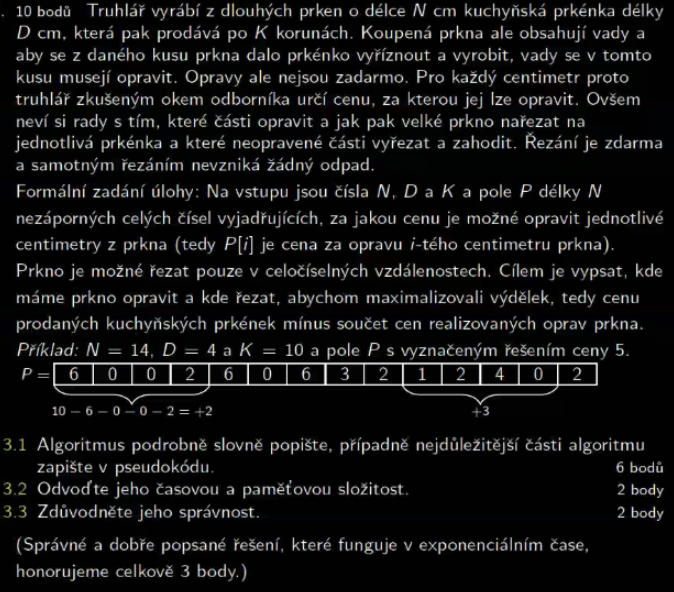
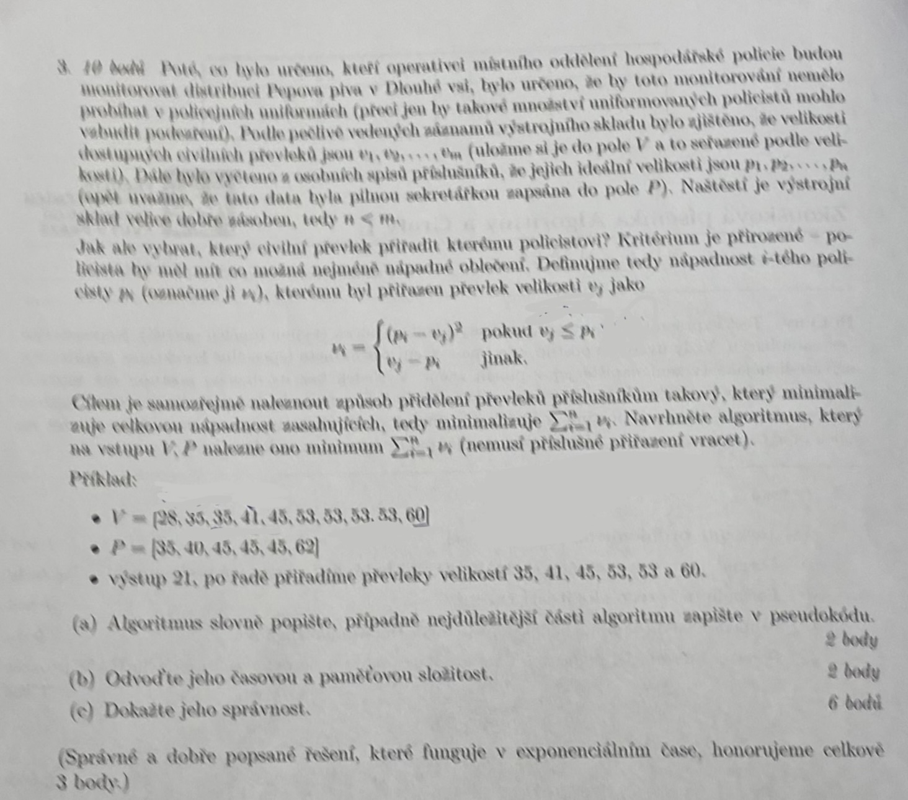
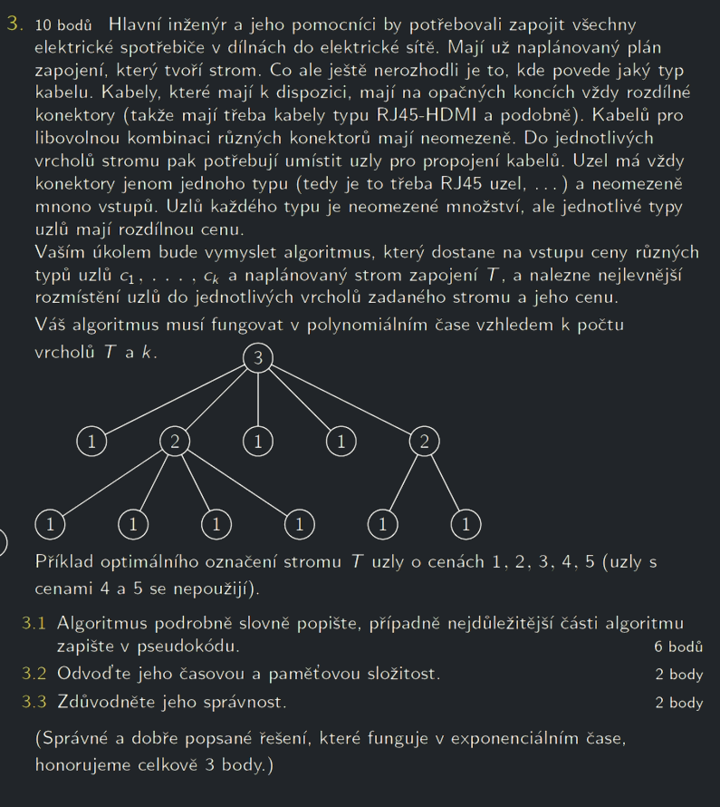

DP úlohy
Poznámka k riešeniam
Riešenia sú work in progress, mali by byť správne (väčšina je otestovaná v pythone), pokiaľ sa vám niečo nezdá, môžete dať vedieť. Chcel som ich sem ale dať, aby aj skoršie termíny mali aspoň nejaké myšlienky, ako úlohy riešiť.
Nejdelší cesta v matici
Nejdelší cesta v matici
- Na vstupu je NxN matice Mat, kde každý prvek má určenou hodnotu. Prvky \(Mat[0][0]\) a \(Mat[N-1][N-1]\) mají hodnotu 0. Zbytek náhodné celočíselné hodoty (záporné, nulové i kladné).
- Navrhněte algoritmus, který nalezne posloupnost prvků začínající na \(Mat[0][0]\) a končící na \(Mat[N][N]\), kde jejich součet je největší. Napříč maticí se dá pohybovat pouze směrem doprava (\(Mat[i][j+1]\)) a nebo dolů (\(Mat[i+1][j]\)).
Řešení
Ak sa nachádzame na ľubovoľnom políčku \(x, y\), vieme, že cesta s najväčším súčtom z tohto políčka buď musí pokračovať o políčko doprava (\(Mat[y][x + 1]\)), alebo o políčko dole (\(Mat[y + 1][x]\)). Jedna z týchto ciest môže mať väčší súčet, vyberieme si teda tú. Celkový súčet hodnôt na ceste, ktorá nám takto vznikne, bude teda:
Toto sa rekurzívne dá popísať nasledujúcim pseudokódom:
Časová složitost takového řešení bude exponenciální, protože v každém políčku máme dvě možnosti rozhodnutí.
Pro memoizaci stačí vytvořit 2D tabulku, do které budeme ukládat maximální délky cest. memo[i][j] reprezentuje délku nejdelší cesty z [0][0] do [i][j]. Kód se změní pouze tak, že přidáme memoizační tabulku (memo), která bude inicializována hodnotami -nekonečno. Postupně od [0][0] projdeme tabulku směrem shora dolů a zleva doprava. Pokud najdeme cestu do buňky [i][j], jejíž délka je větší než již uložená hodnota v memo[i][j], nastavíme hodnotu memo[i][j] na nově nalezenou hodnotu.
Důkaz správnosti by se dal provádět indukcí od levého horního políčka memoizační tabulky. Víme, že toto pole je vyplněné správně (má hodnotu 0). Pro jakékoli pole jinde v memoizační tabulce potřebujeme, aby bylo vyplněné pole nad ním nebo vlevo od něj, což už buď platí, nebo se rekurzivně vyplní. Hodnotu v daném poli v memoizační tabulce potom vypočítáme jako max(M[x-1][y] + memo[x - 1][y], M[x][y-1] + memo[x][y - 1]), což ale bude největší suma cesty od políčka [0][0] do políčka [N-1][N-1], díky tomu, že se do každého políčka [x][y] můžeme dostat poze z buněk [x-1][y] nebo [x][y - 1].
Časová složitost tohoto řešení je \(\mathcal{O}(N^2)\), protože uvnitř cyklů máme vždy konstantní počet kroků.
Prostorová složitost je \(\mathcal{O}(N^2)\)
Kuchyňská prkýnka
Kuchyňská prkýnka

Řešení
Problém treba, ako skoro vždy v DP, preformulovať na rozhodnutia, ktoré môžeme v nejakom n-tom centimetri prkna spraviť. Buď môžeme v n-tom centimetri začať rezať prkno, alebo môžeme tento centimeter vynechať, a pokračovať pozretím sa na \(n + 1\) centimeter.
Označme si \(T(n)\) sumu, ktorú môžeme od n-tého centimetra získať. V prípade, že v n-tom centimetri začneme rezať, bude sa cena rovnať:
teda cene jedného prkienka, mínus ceny opráv daných centimetrov, plus cena prkienok ktoré vieme vytvoriť od \((n + D)\)-tého centimetra. Ako však už bolo spomenuté, daný centimeter môžeme aj vynechať, teda cena by bola \(T(n) = T(n + 1)\). Keďže máme dve možnosti, budeme si opäť vyberať tú, ktorá vedie k maximálnej cene:
Memoizovalo by sa do 1D pola, ktoré by sme postupne napĺňali maximálnou cenou, ktorú môžeme od i-tého centimetra získať.
V tomto prípade je celkom intuitívne aj iteratívne riešenie. Pre i-tý prvok nám totiž stačí vedieť hodnoty \(memo[i + 1]\) a \(memo [i + D]\) (pokiaľ je \(i + D <= N\)). Môžeme teda napĺňať pole odzadu (počítať najlepšie miesta na rezanie odzadu, a potom ich spájať dokopy, vpodstate tak ako pri NRP)
Vzhľadom na to, že pri každom poli v memoizačnej tabuľke strávime konštantný čas, bude zložitosť záležať iba na veľkosti tabuľky, teda \(\mathcal{O}(n)\)
Převoz piva
Převoz piva
Pepa převáží pivo ve městě. Všechny domy jsou na jedné přímce. Každý dům má označeno kolik si objednal piva a kde sa nachádzí v jednoprvkové souřadnici. Vozík váží ~ 20 piv, při pohybu k domu se počítá celková únava podle: celková váha \(\times\) ušlá vzdálenost. Ze startu (pozícia pivovaru je zadaná) má vždy ve vozíku všechny potřebná piva (nemusí se tedy řešit, že vezme prvně pár piv a pak se bude vracet pro další). Při návštěvě domu vyloží všechna potřebná piva. Je třeba najít posloupnost návštěv domů tak, aby celková únava byla nejmenší. Pepa se zároveň musí vrátit zpátky do pivovaru.
Hint
V každom momente sa stačí pozerať na najbližší pravý a ľavý dom.
Řešení
Dôležité je si uvedomiť, že kedykoľvek prejdeme okolo domu, chceme vyhodiť pivá, ktoré daný dom chce (pretože načo ich budeme ďalej vláčiť, minieme len viac energie). Problém sa teda transformoval na binárne rozhodnutie. Pôjdeme najprv do domu ktorý je nám najbližšie naľavo, alebo napravo? V danom dome pivá vyhodíme, a pýtame sa rovnakú otázku.
Pre lepšiu predstavu sem dávam pseudokód rekurzívneho riešenia, je to už ale dlhšie:
Memoizácia by tu už bola trochu komplikovanejšia. Potrebovali by sme memoizačnú tabuľku veľkosti \(n \times n \times 2\), pre všetky kombinácie closest_left, closest_right a our_position. Pre our_position naozaj potrebujeme iba 2 prípady, buď začíname v closest_left alebo closest_right (rekurzívne volania budú vždy z pozície nejakého domu, konkrétne closest_left alebo closest_right, pozri pseudokód). Pri vyťahovaní vzdialenosti z memoizačnej tabuľky by sme potom potrebovali niečo ako:
Počítame teda koľko nás stojí dostať sa do ľavého/pravého domu + koľko sa unavíme odtiaľ. Pre každé políčko v memoizačnej tabuľke však stále robíme iba konštantý počet operácií, a tabuľka je rádovo veľkosti \(n^2\), dostávame časovú zložitosť \(\mathcal{O}(n^2)\).
Převleky oblečení
Převleky oblečení
OCR Tohle fakt nepřečetlo

Řešení
Na konci načrtnem aj myšlienku vracanie priradenia prevlekov, niekedy to v zadaní chcú.
Budeme postupovať podobne ako u prkien, len s dvoma polami. Najprv si zoradíme policajtov a prevleky podľa veľkosti, od najmenších po najväčších. Následne budeme prechádzať policajtov zľava doprava, a buď im prevlek \(q\) priradíme, alebo nie. V pseudokóde asi takto:
Možno je tu dôležité vysvetliť, prečo môžeme prechádzať polia zľava doprava, a nemusíme skúsiť každý policajt s každým prevlekom. Intuitívne to akosi dáva zmysel, myslím, že by tu stačil argument typu: Ak máme nejakého policajta \(V[i]\), a nejaký prevlek \(P[j]\), tak buď platí:
- \(V[i] > P[j]\) - vieme z kódu, že máme možnost preskakovať obleky. Povedzme, že existuje nejaký index \(k\), keď prvý krát od ľava je \(V[i] < P[k]\). Od indexov \(j\) do \(k\) však musí nápadnosť klesať (blížime sa k nulovému rozdielu). Od \(j\)-tého do \(k\)-tého indexu sa teda nachádza najoptimálnejší prevlek pre daného policajta, a ten rekurzívnym sledom skipov aj vyskúšame.
- \(V[j] < P[j]\) - na druhej strane, ak nám nastane toto aj v prípade keď sme žiadne obleky nepreskočili, vieme, že preskočením obleku, teda dostaním sa na nejaký index \(k > j\) len nápadnosť zvýšime. V kóde však skúsime aj možnosť priradiť tento oblek danému policajtovi, teda skúšame aj minimálny.
Memoizácia tohto príkladu vyžaduje vytvorenie tabuľky veľkosti \(|V| \times |P|\). Pre každý index \(p, q\) si budeme pamätať minimálnu nespokojnosť ak priradíme \(p\)-tému policajtovi prevlek \(q\). V každom rekurzívnom volaní sa opäť volá konštantný počet operácií, opäť teda časová zložitosť \(\mathcal{O}(|V| \times |P|) = \mathcal{O}(n^2)\).
Vracať prevleky by bolo v rekurzívnom riešení asi treba tak, že si postupne prebubleme rekurzívnymi volaniami nejaké pole, do ktorého si použité prevleky zapisujeme. V iteratívnom riešení by to však išlo jednoduchšie, a myslím si, že aspoň myšlienka je zaujímavá. Tabuľku by sme mohli napríklad vypĺňať od posledného policajta a prevleku, a v poslednom stĺpci memoizačnej tabuľky budeme teda mať nápadnosť posledného policajta \(p\), ak mu priradíme prevlek \(q\). Pre ďaľšieho policajta odzadu minimalizujeme teda jeho vlastnú nápadnosť pre prevlek \(q\) + minimálnu nápadnosť ďalšieho policajta, ktorý si vyberá z prevlekov \(q + 1\) až \(|P|\). Pre predstavu for loop:
Tu by sme si v zvlášť v tabulke ukladali, aký prevlek sme priraďovali ďalšiemu policajtovi (teda niekam by sme ukladali ešte index k). Tak by sme mohli spätne zostaviť kombinácie policajt-prevlek.
Kabely
Kabely

Řešení
Formálne sa problém pýta na to, ako dokážeme za čo najlacnejšiu cenu vyplniť vrcholy v strome tak, že žiadne susedné konektory nie sú rovnakého typu.
Pozrime sa na problém trochu zúžene. Majme nejaký vrchol \(V\), a priraďme mu konektor \(A\), a teda cenu uzla s konektorom \(A\). Ignorujme teraz na chvíľu vrchol \(V\). Ten bol spojený s vrcholmi \(U_1, U_2, ... U_d\) kde \(d = deg(V)\). Vpodstate sme ale takto vytvorili \(d\) postromov smerujúcich preč od \(v\), na ktorých môžeme riešiť rovnaký problém (teda hľadanie sady uzlov s najmenšou cenou), iba s podmienkou, že \(konektor(U_1), konektor(U_2), ... konektor(U_d) \ne A\). Riešime teda rovnaký problém, ale už nie pre vrchol \(V\), ale pre \(U_1, U_2, ... U_d\). Celková cena bude potom
Samozrejme je možné, že výberom konektoru \(A\) sme sa cenovo zle obmedzili, a keby vyberieme napríklad konektor \(B\), tak dostaneme menšiu cenu. Hľadáme teda opäť minimum cez všetky konektory, ktoré môžeme vrcholu \(V\) priradiť.
Túto funkciu môžeme následne zavolať na ľubovoľný vrchol s obmedzením nastaveným na undefined. Tu by sa možno zišiel nejaký dôkaz, ja by som ale jednoducho povedal, že táto rekurzia skúsi všetky možné kombinácie, a teda aj tú optimálnu.
Keď už sa rozprávame o optimálnosti, asi by sa oplatilo použíť nejakú memoizáciu. Memoizačná tabuľka bude mať teraz 2 rozmery, jeden budú vrcholy, a druhý budú konektory. Do tabuľky si uložíme, aká je minimálna cena podstromu od daného vrcholu, ak má vrchol obmedzenie na daný konektor.
Tu je asi dôležité zmieniť, že pri volaní funkcie cena_podstromu na nejaký vrchol \(v\) bude vždy predchodca rovnaký. Prečo? No medzi naším počiatočným vrcholom a vrcholom \(v\) môže existovať iba jedna cesta (graf je strom), a teda predchodca na tejto ceste bude vždy rovnaký. Memoizačná tabuľka bude ale vyzerať rôzne podľa toho, z akého vrcholu začneme.
Časová zložitosť je tu ajtak trochu horšia, pre každé políčko v memoizačnej tabuľke totiž vykonávame \(k \cdot deg(v)\) operácií, rádovo \(\mathcal{O}(k\cdot V(T))\). Vzhľadom na veľkosť tabuľky dostávame celkovú časovú zložitosť \(\mathcal{O}(k^2\cdot V(T)^2)\)
Ešte jedna vec, nemusíme si v memoizačnej tabuľke predávať celý zoznam konektorov. Ak sa nad tým zamyslíme, pre každý vrchol si musíme iba pamätať, aký typ konektoru mu priradiť, pre každé obmedzenie, a zároveň cenu podstromu pri takomto obmedzení. Pri rekonštrukcií riešenia si pre iniciálny vrchol \(V\) teda vyberieme konektor, ktorý vedie k najmenšej cene (najmenšie číslo v stĺpci vrcholu \(v\)), a potom rekurzívne sa v tabuľke pozrieme na stĺpce všetkých susedných vrcholov, spýtame sa, aká je ich hodnota pri tomto obmedzení, a aký konektor pre tento vrchol vybrať (toto, ako som spomenul, ukladáme tiež do tabuľky), čo nám dovolí sa rekurzívne pozrieť na jeho susedov a spraviť to isté.